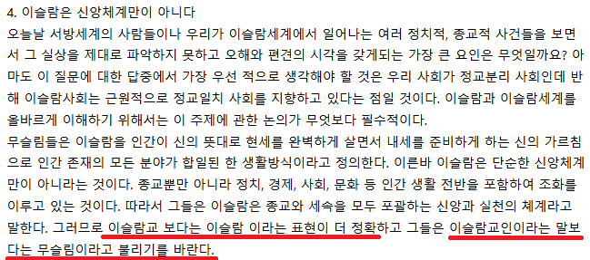
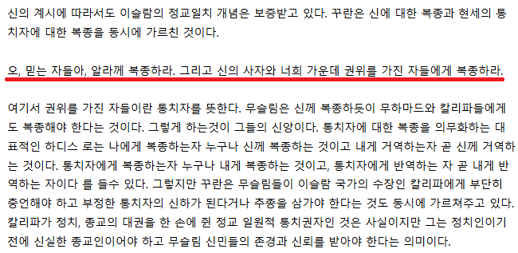
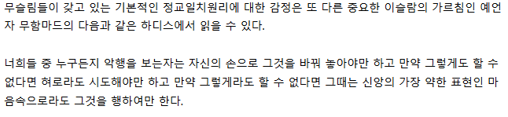

빠들의 주 논리가 표현의 자유, 종교의 자유에 있는 것 같아 말함.
이슬람은 '종교'가 아니라 그 자체로 국가이자 체계다.
이건 이슬람을 까기 위한 표어가 아니라 진짜로 이슬람을 정의하는 올바른 문장임.

[대한민국 이슬람 공식 포털(www.koreaislam.org) 이슬람의 이해 게시판 "이슬람의 이해" 게시물 中]
불교와 기독교 등의 종교가 세속의 삶보다 내세를 더 강조하고 인간생활의 육체적인 면보다 정신적인 면을 중시하는 것에 반해
이슬람은 내세와 똑같이 현세의 삶을 중시하고 인간생활과 영적,육적인 양 측면을 '똑같이' 중시함.
그렇다면, 속세의 삶을 통제할 방법이 무엇일까? 엄격한 종교적 통제겠지. 곧 정교일치임.
오늘날 거의 모든 나라들이 정교분리 원칙을 토대로 국가구성법(헌법)을 제정하는 것에 반하는 교리임.
기독교가 처음부터 세속과 내세를 갈라놓은 예수의 가르침을 신봉하는 것에 반해
이슬람은 종교를 바탕으로 하여 첫 공동체를 세우고, 그 공동체가 교회이자 국가인 개념에서 출발하였이에
세속을 통치하고 잘 사는 일과 내세를 준비하는 일을 구분하지 않은 것임.
따라서 이슬람세계의 무슬림은 이슬람에 정치, 경제, 사회, 종교, 군사 등 제반영역에 관한
고유한 사상과 이념, 원리, 제도가 모두 들어있다고 믿고 있음.
애당초 '무슬림'의 뜻 자체가 '복종하는 자'임.
이슬람은 하나님의 의지에 무조건 복종하는 종교요, 꾸란은 마지막 선지자 무함마드를 통해 작성된 '신의 의지' 그 자체임.
비이슬람 문화권에 들어온 이슬람 공동체에게, 비이슬람 국가는 어떻게 보일까?

[대한민국 이슬람 공식 포털(www.koreaislam.org) 이슬람의 이해 게시판 "이슬람의 이해" 게시물 中]
신의 계시(꾸란)에 따라서도 이슬람의 정교일치 개념을 보증받고 있음.
권위를 가진 자들이란 통치자를 뜻함.
무슬림은 신께 복종하듯 무함마드와 칼리파에게도 복종해야한다는 뜻임.
통치자에 대한 복종은 곧 신께 복종하는 것이고, 거역하는 것은 곧 신께 거역하는 것임.
하지만 꾸란에서는 칼리파에게 부단히 충언하고 부정한 통치자의 신하가되거나 추종을 삼가야한다는 점 또한 가르치고 있음.
칼리파가 정치, 종교의 대권을 한 손에 쥔 정교일원적 통치권자인건 사실이지만,
정치인이기 전에 신실한 종교인이어야하고 무슬림 신민들의 존경과 신뢰를 받야아한다는 뜻임.
따라서 이슬림 관점으로 만약 통치정부가 나쁘다면 그것은 통치자가 통치하는 법을 몰라서가 아니라
통치자가 종교적으로 올바르지 않아 신법인 샤리아에 복종하지 않고 등한시 하였기 때문임.
이는, 정치 반란이 종교적 이유를 내세우면 정당화 될 수 있다는 것을 뜨함.
무함마드는 다음과 같은 하디스를 남겼음.
'나의 공동체는 오류에 동의하지 않을 것이다.'
이에 이슬람 국가에서 여러 분파가 생기거나 기존 정권에 대항하는 반정운동을 전개해도 묵인될 수 있으며
지방의 군사력이 신장되어 중앙정부에 도전하는 정치적 분열현상이 계속 일어나도 정당화할 수 있음.
비이슬람 문화권에 들어온 이슬람 공동체는, 비이슬람의 '오류'에 어떻게 대응할까?

[대한민국 이슬람 공식 포털(www.koreaislam.org) 이슬람의 이해 게시판 "이슬람의 이해" 게시물 中]
위 하디스는 오늘날까지 무슬림의 국가, 사회, 개인생활 모든 영역에서 행동의 기본지침이 되고 있음.
불의와 악행을 보고 그냥 앉아 있는 것은 올바른 신앙인의 태도가 아니라는 것임.
더욱이 마음으로만 실천하는 행위는 '가장 약한 표현'임.
역설적으로, 정의를 위해서는 언제나 적극적 사고와 더불어 신앙의 실천주의를 몸소 실천해야 함.
비이슬람 문화권에 들어온 이슬람 공동체가, 그 사회의 만연한 악행을 어떻게 바꿔놓으려 할까?
이슬람의 가장 큰 문제는 특정 시대의 사회,경제,문화적 조건에서 형성된 규범을
시대를 초월한 신의 명령으로 간주한다는 점임.
7세기 아라비아 사회에서 형성된 종교적 생활규범과 가족제도들을 오늘날까지 적용한다는 점.
타 종교들이 세속과 내세를 분리하여 유연하게 대응하는 반면
정교일치 체계에서 사회 전체에 강요하려 들고, 그 강요가 그들의 의무라는 점.
따라서 무슬림 교리가 현대적으로 재해석되고 그게 주가 되지 않는 이상
종교의 자유가 어쩌구 편들 이유가 없다고 생각한다.
실제로 외국 이슬람과 대화해보면 종종 이런 관점이 슬쩍 드러나긴 함
좋게 말해서 배려하고 존중한다이지, 같은 눈높이로 보는 것이 아니야
종교 대답할 때 무교라고 대답하면 안 되는 이유이기도 함
기독교는 '너 우리 신 안 믿으면 지옥가'인데, 이쪽은 약간 혼네와 다테 같은 느낌이라고 할지...